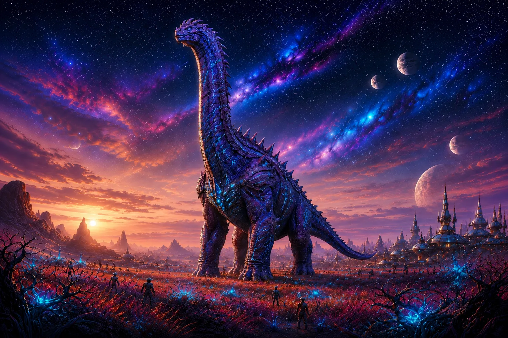
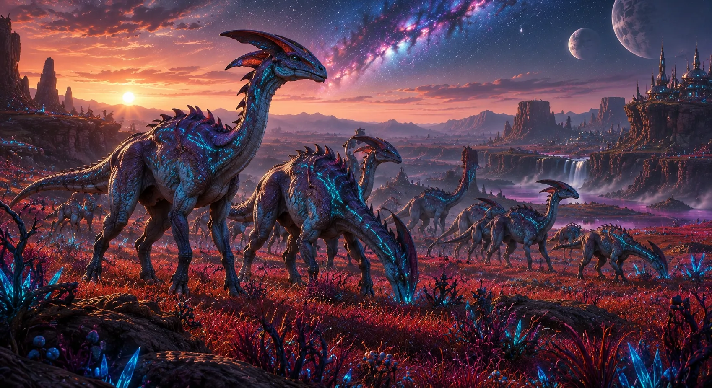
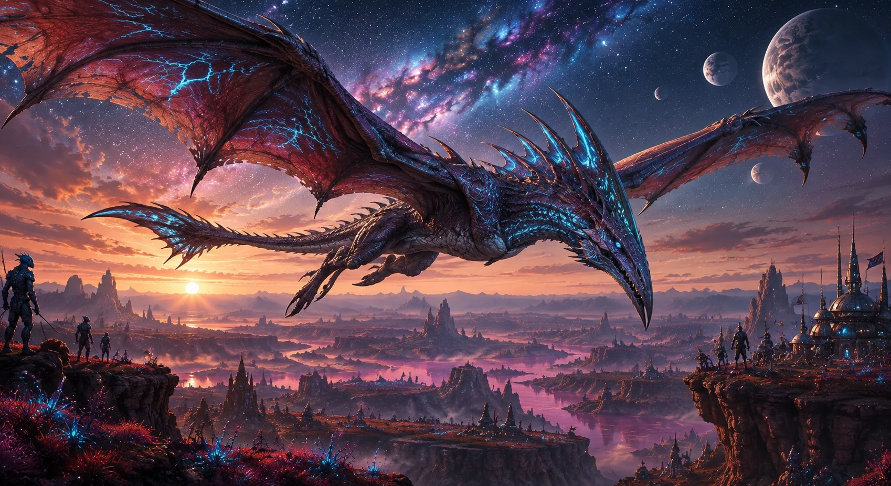
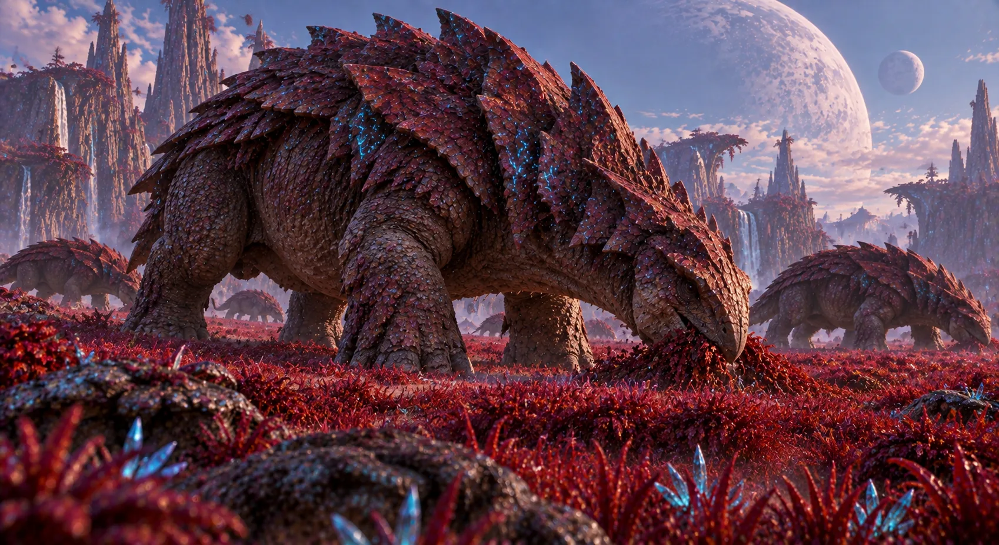
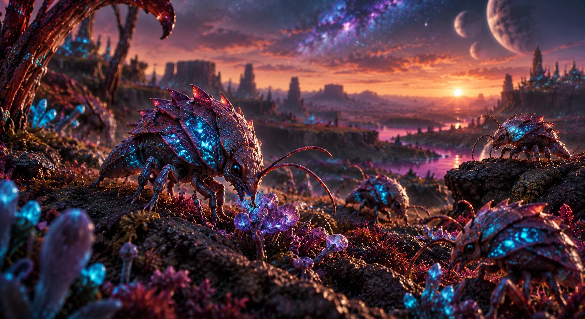
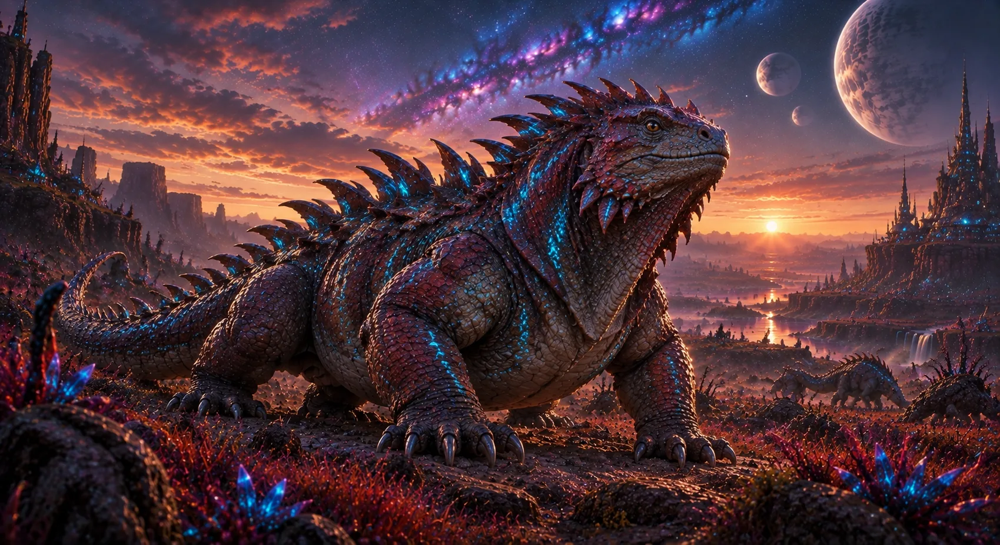
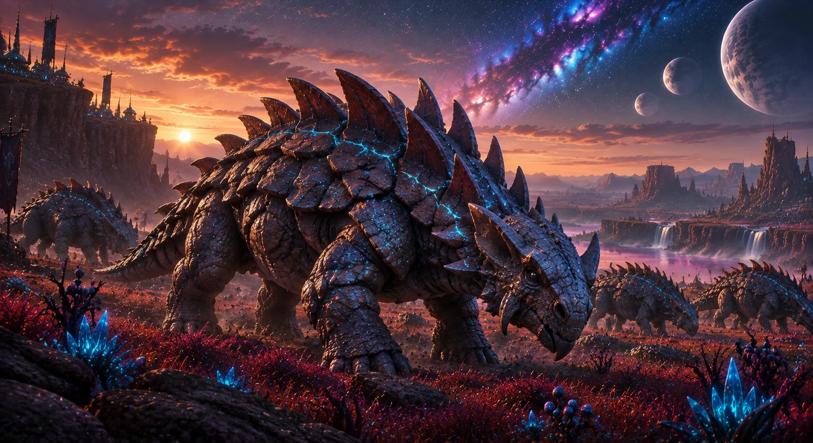
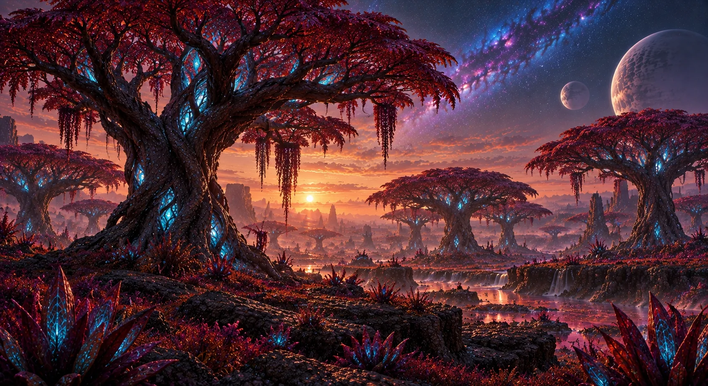
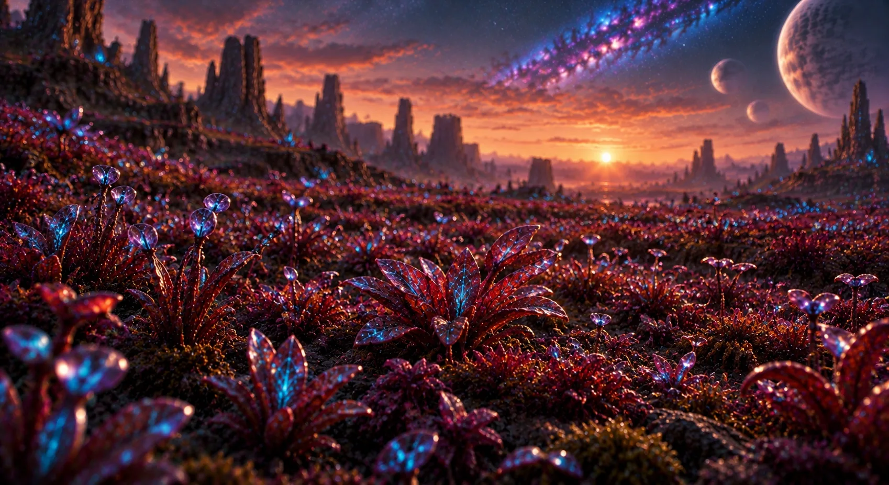
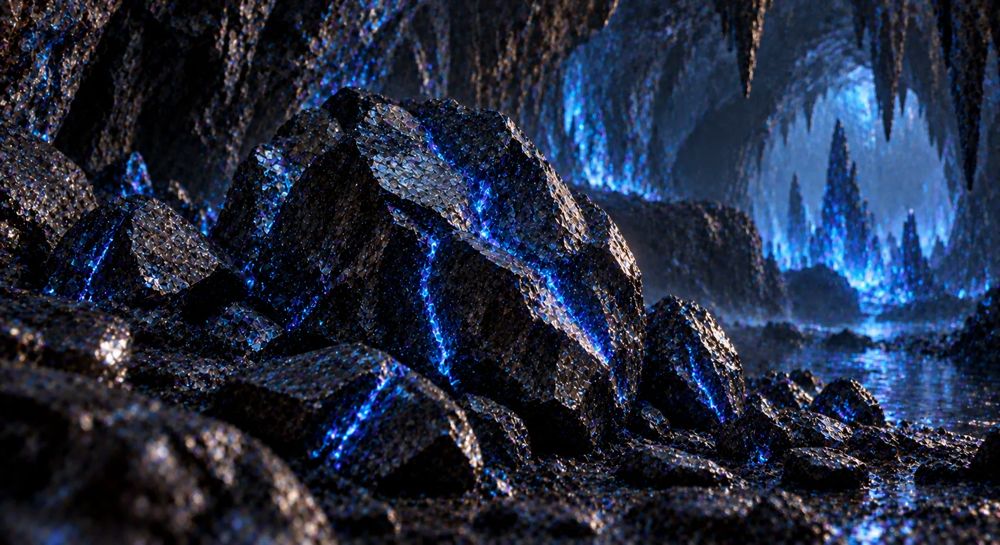

Sapphire Crest
Nombre del sistema
Sistema Sapphire
Tamaño del planeta
15,302 km de diámetro (Tamaño estándar)
Número de lunas
2 Lunas (Sínica-K y Lúnica-K)
Tipo de planeta
Planeta terrestre
Temperatura
De día en la mayoría de SapphireCrest hace una temperatura extremadamente alta de entre 43 y 60 grados Celsius.
De noche la temperatura baja drásticamente, llegando a entre 5 y -10 grados Celsius.
Fenómeno meteorológico
Tormenta de Protorayos
Las tormentas de Protorayos son mortales, con una potencia.
Nieblas de Inversión en Cráteres
Durante la madrugada, el vapor de Dilugua se condensa en los bordes de los cráteres formando murallas de niebla que protegen los ecosistemas cerrados del calor del mediodía.
Maelstroms Térmicos
Corrientes ascendentes de aire caliente provocadas por la roca Kalmario, utilizadas por el Dragon Cratalock para desplazarse sin gastar energía. Un momento idóneo para ascender utilizando parapentes o cualquier objeto o nave aéreos.
Biomas
SapphireCrest está formado mayoritariamente por un bioma, bioma desértico. Está compuesto principalmente por extensos desiertos rocosos y grandes cráteres que, en su interior, ocultan vastos oasis y ecosistemas marinos cerrados. La superficie exterior es árida y castigada por vientos intensos, mientras que las depresiones geográficas rebosan de vida y humedad.
Razas alienígenas residentes

Ceruleanos
Raza de categoría estándar nativa de este mundo. Son buenos cazadores y guerreros. Esta raza es la más común del planeta.
Población: ~6.800.000 individuos
Velorians
Raza de gran tamaño y fuerza, estos guerreros son excelentes guerreros y son la actual raza dominante del planeta.
Población: ~1.900.000 individuos
Garguleans
Raza primitiva que vive en las cuevas de Sapphire Crest, salen de ellas como mucho de noche y cuando consumen sangre se vuelven salvajes y extremadamente peligrosos.
Población: ~2.300.000 individuos
Olibios
Herbívoro de gran tamaño y largo cuello, mide aproximadamente 35 metros de altura y 18 de longitud. Es la criatura más pesada del planeta, con 95 toneladas.

Croftolitis
Herbívoros de aproximadamente 2.6 metros de altura y 5 de longitud, suelen ir en manadas de un gran número, superiores a 25 miembros, suelen pastar por los campos.

Aerocultis
Criatura alada gigante y poderosa, capaz de recorrer grandes distancias sin cansarse, un depredador volador del que pocos pueden escapar.

Ankodon
Criatura de gran tamaño de unos 6 metros de altura y unos 8 de longitud. El Ankodon tienen una armadura al rededor de la parte superior del cuerpo que lo protege ligeramente.

Escavadores de Sapphire
Criaturas de unos 1.4 metros de altura que cavan y hacen túneles removiendo y revolviendo la tierra.Sus túneles oxigenan el suelo y permiten que germinen muchas plantas.

Orlirios
Criatura de unos 12 centímetros de longitud, es pequeña y vital para la vida del planeta, ya que permite que las plantas se reproduzcan y crezcan con más facilidad y velocidad.

Tyrano Titanus
Un super depredador, el más peligroso del planeta, rápido, grande y resistente. Mide entre unos 15 y 18 metros de altura y pesa al rededor de 36 toneladas. Puede alcanzar los 140 km/h.

Titanosucus
Depredador semiacuático, de unos 4 metros de altura y unos 18 metros de longitud, si entras en la charca o lago en el que esta criatura se encuentre, despídete. Además en tierra alcanzan los 45 km/h.

Carabundo
Criatura de 1.4 metros de altura y unos 200 kilos de peso, se alimenta de pequeñas criaturas o de carroña, es común encontrarlos cerca de manadas de herbívoros.

Armagodon
Criatura de unos 2.9 metros de altura y unos 5 de longitud. El Armagodon tienen una armadura al rededor de la parte superior del cuerpo que lo protege de cualquier daño.

Gusanos de raíz Sapphire
Pequeños gusanos de unos 45 cm de longitud que viven al rededor de los árboles, con sus desechos alimentan a las plantas y árboles del planeta.

Sapphire T-bird
Su nombre significa ave del terror de Sapphire y es uno de los depredadores más temidos, pues son rápidos y cazan en manada, son el terror de cualquier criatura de pequeño tamaño.

Crelareo
Árboles de unos 10 metros de altura que alimentan a los herbívoros del planeta, son muy frecuentes por el planeta y sus hojas crecen a una gran velocidad.

Caruleas
Es la planta más común de encontrar, cubre prácticamente toda la superficie de Sapphire Crest y son de pequeño tamaño.

Secuoyas Sapphire
Gigantescos árboles secuoya que miden entre 15 y 28 metros de altura. Solo los Olibios se alimentan de ello debido al enorme tamaño que tienen.

Flor meridiona
Esta es una muy extraña flor que florecen 1 mes cada año y su néctar es capaz de curar cualquier herida, una planta curativa muy buscada por la fauna y las razas inteligentes.

Hongos Q
Los Hongos Q son unos hongos que salen muy frecuentemente en las cuevas de Sapphire Crest, producen un líquido que los Garguleans consumen, por esa razón, esta raza protege los hongos con mucha dedicación.

Cristal de cianita
Estos cristales pueden almacenar una gran cantidad de energía, la pueden lanzar de forma controlada, razón por la cual los Ceruleanos la utilizan de combustible para sus armas a distancia.

Líquido Q
El Líquido Q sale de los Hongos Q, los cuales crecen en las cuevas de Sapphire Crest, este líquido es nutricionalmente parecido a la sangre para los Garguleans, les sirve de alimento sin volverlos agresivos, también sirve para producir medicamentos.

Ámbar Sapphire
El ámbar Sapphire es un recurso sacado del interior de las Secuoyas Sapphire, este se produce durante los 500 años que tienen de vida estos árboles y es un recurso muy ansiado por los ricos de la galaxia por su rareza.

Varkonio
El Varkonio es un metal que tiene una gran capacidad para conducir energía o contenerla, los Ceruleanos lo suelen utilizar para crear sus armas cuerpo a cuerpo o a distancia. Además son un material muy resistentes.

Nódulos Thrax
El Nódulos Thrax es una especie de núcleo que almacena tanto energía como muestras de todo tipo de plantas que hayan a su alrededor. Estos nódulos al romperse esparcen semillas por toda la zona las cuales crecen a gran velocidad.